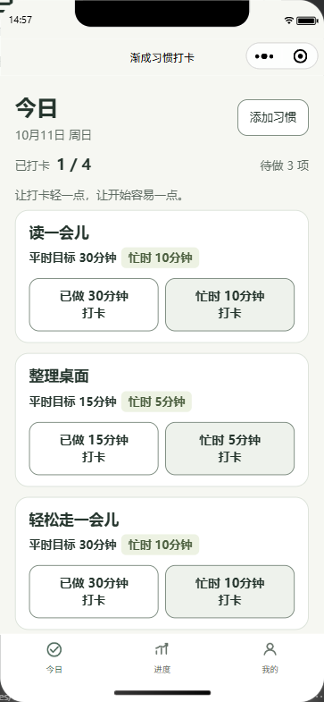
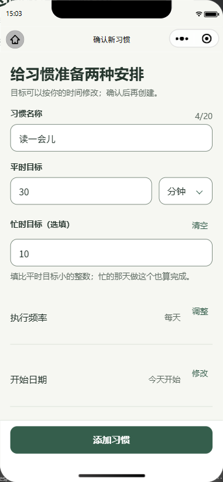
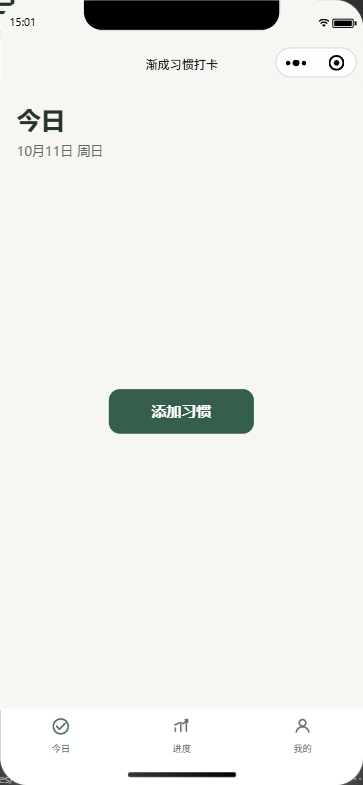
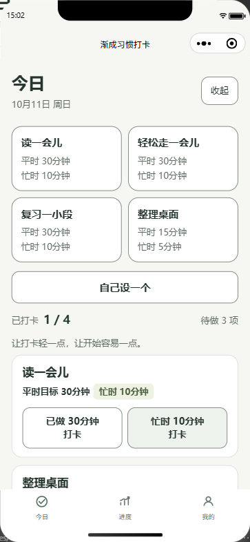
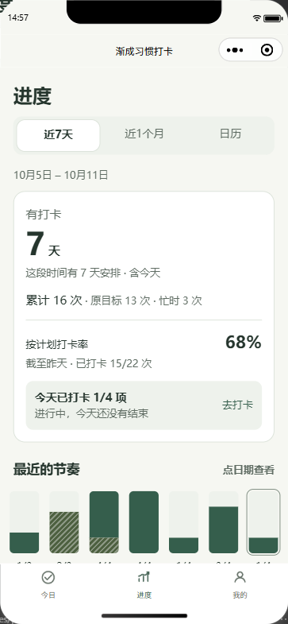
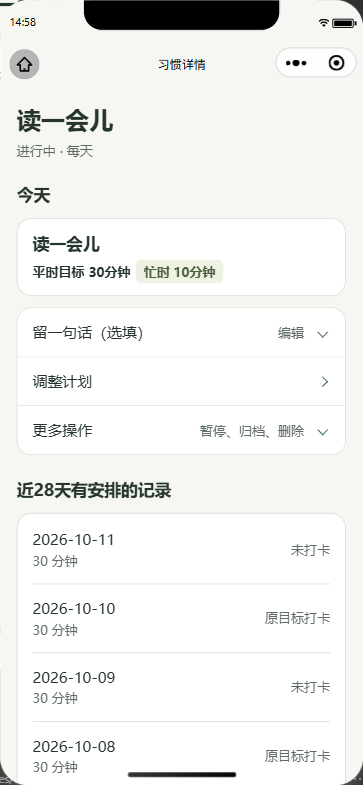
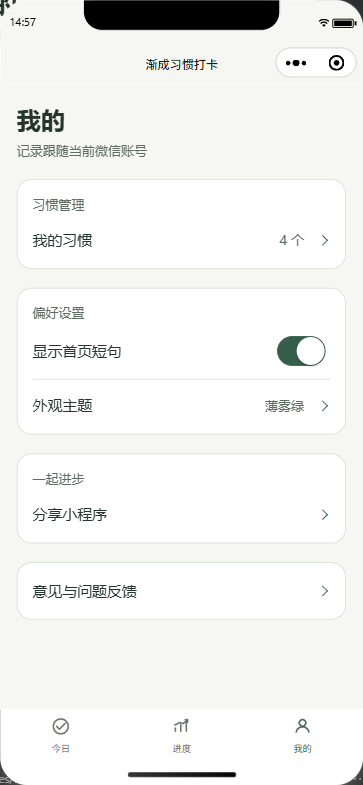
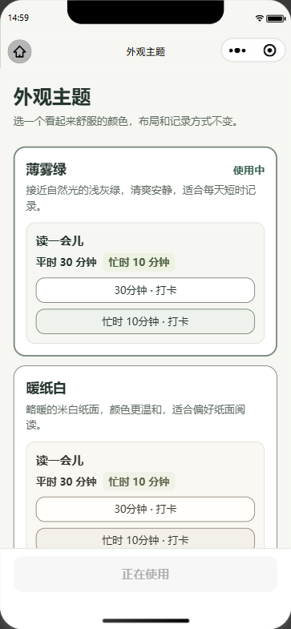

习惯养成类工具的问题通常不在「功能不够」，而在「设计前提不对」。它们默认用户处在一个每天都有稳定时间块的状态里，于是把打卡做成连续性考核：一旦中断，用户面对的不是「明天继续」，而是「已经归零」。对时间本就不稳定的人来说，这个反馈是劝退而不是激励。
与此同时，这类工具常见三个具体毛病：
目标用户是想养成阅读、学习、散步、整理这类小习惯，但每天可用时间不稳定的人——上班族、学生，以及要兼顾家庭的成年人。他们的共同特征不是「不想做」，而是「今天到底有没有半小时，事先不知道」。
典型的使用时刻很短：睡前十分钟、通勤路上、忙完一件事之后顺手打开。因此产品最重要的任务被压缩成一句话——定一个做得到的计划，做完之后快速记一下，下次回来还能接着继续。相应地，小程序不设置内容流、资讯页或社区，也不做营销弹窗；打开即今日。
习惯打卡是一个「高频、极短、强依赖即时性」的动作。微信小程序免安装、可加到桌面、可从聊天会话直接进入，恰好匹配这种「想起来就用 10 秒」的使用节奏；同时微信云开发提供了可信身份与云端数据库，使「账号数据只存在云端、不依赖本机」成为可以真正落地的方案，而不需要用户额外注册或同意云端存储。
整个产品围绕五条设计原则展开。它们同时也是「不做什么」的清单——本作品的取舍主要体现为克制。
这是产品的核心设计。创建习惯时，除了「平时目标」，还可以填一个更小的「忙时目标」（例如平时 30 分钟、忙时 10 分钟）。忙时档完成一次，当天同样记为完成。这样做的意义不只是「少做一点也算」，而是让计划在订立时就已经承认了人会有状态差的日子，从源头上消除「今天注定失败」的处境。今日页把两档并列呈现，用户点哪个就记哪个。


当某个习惯连续几天没有安排或没有完成时，产品不会显示断签天数，也不会要求补做。逻辑层识别出「近期漏做的安排不超过 2 天」时，今日页会出现一个温和的回归提示，把最容易完成的那一项放在前面，引导用户从最小的一件事重新开始。休息日不计入未完成，因此「按计划打卡率」统计的是安排在身上的那些天。
产品明确不自动计时、不采集设备运动数据、不做后台统计。「打卡」是用户对自己的一次如实记录，界面文案也直接写出「做完再打卡，不会自动计时」。这是对用户的诚实：记录的价值在于让本人看见自己的节奏，而不在于生成一份可用于考核的证据。
从模板添加、从分享采用、手动填写，任何一条创建路径都会先进入一个可编辑的确认页，把名称、平时目标、忙时目标、执行星期、开始日期原样呈现，用户确认后才真正创建。产品里不存在「一键生成一堆习惯」的路径。
账户数据只以云端为准。客户端不写本机存储、不保存账户快照、不做离线队列；断网时页面只读并给出「连接网络后重新读取」的提示，而不是先在本地记账、联网后再补传。这条原则牺牲了「断网也能打卡」的便利，换来的是多设备之间不会产生互相覆盖的分叉数据，以及数据删除可以真正删除。
产品提供两套语义主题：「薄雾绿」（主色 #355E4C，页面底色 #F6F7F2）与「暖纸白」（主色 #79604F，页面底色 #FAF8F3）。两套主题共享同一套语义色 token（页面、卡片、文字、强调、分隔线），因此切换主题只改变观感，不改变任何布局与记录方式。品牌识别元素是「一长一短线」与双档目标本身——一条较长的线代表平时目标，一条较短的线代表忙时目标。
作品自 2026 年 9 月下旬开始持续迭代，采用「提案 → 实施 → 验证 → 记录」的固定节奏。下面按阶段记录实际做过的事。
每个阶段结束时统一执行四道门禁并记录结果：自动测试、静态检查、云产物一致性、规范严格校验；涉及界面与渲染的改动另跑微信原生编译器校验，并在微信开发者工具中复核实际渲染与交互。本文档中的全部界面截图均取自当前源码的这一次取证，使用独立于生产数据的合成账户，复核过程中断言零云调用、零本机存储写入、零真实写入。
「渐成习惯打卡」是一个面向个人用户的轻量习惯养成小程序，共 13 个页面。它只做一件事：让一个人在时间不稳定的日子里，依然能完成今天的那一点。核心流程是「创建习惯 → 每天打卡 → 看进度 → 留一句备注」。
首次进入、或今天还没有任何打卡项时，主要内容区只有一个居中的「添加习惯」按钮。点开后会看到四套开箱即用的模板，也可以选择「自己设一个」。


| 模板 | 平时目标 | 忙时目标 | 适用场景 |
|---|---|---|---|
| 读一会儿 | 30 分钟 | 10 分钟 | 睡前或通勤阅读 |
| 轻松走一会儿 | 30 分钟 | 10 分钟 | 日常散步、饭后走动 |
| 复习一小段 | 30 分钟 | 10 分钟 | 课业或技能复习 |
| 整理桌面 | 15 分钟 | 5 分钟 | 下班收尾、环境整理 |
自定义表单支持习惯名称、平时目标、忙时目标（选填）、执行星期与开始日期。编辑、暂停、归档这类结构性改动次日生效，当天已经安排好的任务不会被中途改写；「我的习惯」页会提前显示「明日生效」的变更摘要。
今日页是核心页面。上半部分是日期与进度（如「已打卡 1/4 · 待做 3 项」），下面是待做习惯的卡片列表；每张卡片并列两个按钮，分别是「已做平时目标 · 打卡」与「忙时目标 · 打卡」。点击后向云端提交，收到云端确认才显示「打卡成功」，随后该条移入下方的「今日已打卡」折叠分组，可在其中查看详情或撤销。
页面下方还有一行首页短句，取自本地固定文案集合中的一条，在本次运行会话内保持稳定，可在「我的」中关闭。它不读取用户的习惯内容、不联网、不写入本机。
进度页分三个标签：近 7 天（逐日柱图，点日期进入日历）、近 1 个月（固定最近 30 天趋势）、日历（从最早创建的习惯所在月开始浏览，月格显示公历日期、简化农历与「打卡 X/Y」）。
统计口径刻意区分事实与判断：有打卡天数、累计次数、原目标次数与忙时次数分列；「按计划打卡率」截至昨天，今天单独展示，避免一天的进度被未结束的今天拉低。日历支持只读查看未来日期的安排，也可回看历史——包括习惯当时的目标、改名与备注。整个进度页是只读的，任何修改都要回到今日或详情页操作。

习惯详情页把单个习惯的全部信息与操作收在一处：今天的目标、备注（选填，可在详情里补记）、调整计划、更多操作（暂停 / 恢复 / 归档 / 删除），以及近 28 天有安排的记录。删除带双重确认，确认后连同该习惯的全部打卡、备注与待生效计划一起在云端同一事务中删除。

「我的」页提供习惯管理入口、首页短句开关、外观主题切换、微信原生分享与反馈入口。外观主题页用真实卡片预览两套主题后保存，保存结果经云端确认后生效。


读取失败时，页面不会显示成「你还没有习惯」——那会让用户误以为数据丢了。首次读取失败会给出「重新读取」入口；会话内已经确认过数据、只是后续读取失败时，页面保留已确认内容并标记为只读，用户不能在其中做任何修改。云端状态页展示读取中、已确认、待核对、删除待确认等状态，并提供重新读取与重试入口；数据与隐私页承载隐私说明与「清除全部数据」（双重确认）。
系统由三部分组成：微信原生小程序客户端、微信云开发云函数层、云开发数据库。客户端不直接读写数据库或云存储，所有账户数据的读写都经过云函数；云函数从微信可信上下文取得身份，不采信任何客户端传入的身份字段。
compileType 为 miniprogram，没有使用第三方 UI 框架，前端没有 npm 运行依赖，无需「构建 npm」。共 13 个页面、92 个源文件。core/ 是无副作用的纯逻辑（习惯状态机 habits.js、进度投影 progress-review.js、建议规则 progress-advice.js、日期与农历）；services/ 负责云会话、传输、生命周期、网络恢复、草稿与主题；pages/ 只做渲染与事件，共用逻辑通过 services/ui.js 与模板复用。create / edit / status / complete / completeMinimum / undo / note / deleteHabit / settings）经由 reduce 归约，命令只描述意图；校验规则（名称 1–20 字、单位限分钟/页/次、目标范围、忙时目标必须小于平时目标、星期至少一天、时间格式）集中在 validatePlan，客户端与服务端共用同一份 habits.js。getStorageSync / setStorageSync / getFileSystemManager / USER_DATA_PATH，由静态检查脚本持续强制。服务端业务源码集中在仓库的 server/ 目录，再由构建脚本生成各云函数的产物目录。npm run build:cloud 负责生成，npm run check:cloud 逐字节比对产物与源码，不一致即报错；部署脚本在做任何上传前强制先跑一致性检查。这样避免了「只改了云函数里的生成副本、忘了改源码」的常见事故。
| 机制 | 实现 |
|---|---|
| 可信身份 | 只读取微信云函数的可信上下文（APPID / OPENID，共享环境下为 FROM_APPID / FROM_OPENID），校验调用来源与来源 AppID；账户主键为 SHA256(APPID:OPENID)。客户端请求体中的任何用户标识字段都不参与认证。 |
| 幂等提交 | 每次写入携带 operationId。服务端维护幂等回执（同一 operationId 重放返回原回执并标记 replayed；同一 ID 换内容则拒绝），因此客户端在响应丢失后可以安全重试同一个操作，不会重复打卡。 |
| 版本与冲突 | 写入必须携带 expectedRevision。版本不匹配返回冲突并附带最新快照，客户端改为展示新数据、请用户重新操作——多设备之间不会互相覆盖。 |
| 数据代际 | 删除账户数据后生成新的 epoch（UUID）。旧设备携带旧代际的写入被拒绝，从机制上防止「删除后被旧设备写回来」。 |
| 配额与限流 | 固定分钟窗口 + 北京日窗口双重限流，事务内原子核减；私有作用域（偏好 / 提醒）需要账户与代际匹配，公开作用域按 IP 维度独立计数。 |
| 两段式删除 | 第一步在事务内更换代际、清空主数据并置 cleanupPending；第二步在事务外分批清理旁路集合，全部成功后才向客户端确认删除完成。中断后可凭云端状态继续，不会出现「已告知删除成功、但旁路数据仍在」的情况。 |
| 门禁开关 | 所有能力默认关闭，需要显式环境变量（如 HABIT_API_ENABLED、HABIT_MINIPROGRAM_ONLY、HABIT_APP_ID）才生效，缺任一项按关闭处理。 |
账户数据集中在单个文档中，按账户隔离：
其余数据存放在旁路集合中：偏好与置顶、公开分享快照、限流计数、提醒任务。客户端对这些集合没有直接读写权限。
operationId 供幂等重试；重启后重新拉取云端，本机不排队、不落盘。shareId 精确读取白名单字段，不暴露私人名称、备注与账户身份。npm audit 复核（wx-server-sdk 升至 4.0.2，严重级别告警为 0），审计记录与尚未清零的低 / 中级别告警一并留档。项目把「验证」当作和功能同等的一等公民，每次改动都通过以下门禁，结果写入对应变更记录。下列数字为本文档撰写当日对当前源码的实际执行结果：
| 检查 | 内容 |
|---|---|
| 自动测试 | 503 项：领域状态机、云协议与身份、同步状态机、可靠性与重试、删除与清理、限流、页面控制器、草稿、主题、农历与进度投影。 |
| 静态检查 | 373 项：全部 JS/JSON 语法与配置、页面文件完整性、TabBar 路径、主题文件无漂移，以及「小程序不得使用本机持久化 API」的强制断言。 |
| 云产物一致性 | 52 个云函数产物与 server/ 源码逐字节一致，不安装、不部署、不发网络请求。 |
| 规范校验 | 22 份变更提案通过严格校验；需求变更先写提案（范围、非目标、验收标准），再实施、再记录证据。 |
| 微信原生编译 | 调用微信开发者工具自带 wcc.exe / wcsc.exe 对全部页面与模板做真实 WXML / WXSS 编译（非模拟渲染）。 |
| 云运行时兼容 | 用 Node.js 16.13.2 对云函数源码做语法检查，并真实加载 wx-server-sdk、核对 crypto.randomUUID 等运行时能力。 |
| 受控界面取证 | 通过微信开发者工具自动化接口，在进程内夹具上复核页面渲染与交互，并断言 cloudCalls = 0、storageCalls = 0、realWrites = 0。 |
server/ 是唯一业务源码，云函数目录是生成产物；部署前强制比对，从工程上消除「改了副本忘了源码」。| 姓名 | 角色 | 主要分工 |
|---|---|---|
| 代成德 | 产品与开发（独立完成） | 需求定义与产品设计、小程序端页面与交互实现、云函数与云端数据结构实现、云端环境配置与部署、测试验证、文档与取证材料整理 |
本作品由代成德独立开发，未使用团队外成员的开发成果，也未使用任何未获授权的第三方代码或素材；项目中引用的第三方源码（农历转换算法，源自 solarlunar 3.1.0，ISC 许可）已在源码文件头保留许可声明，并附完整许可证文件。